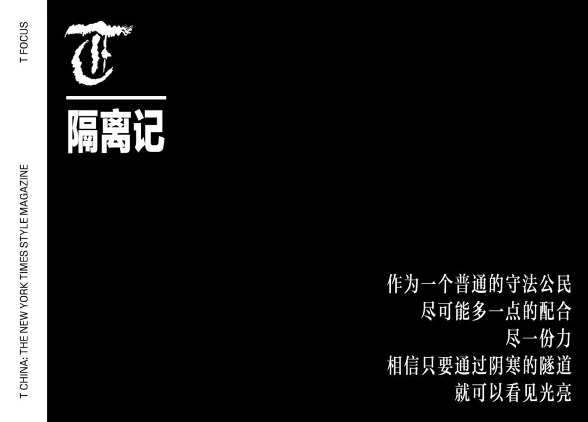
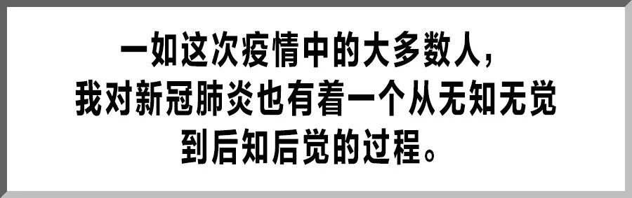
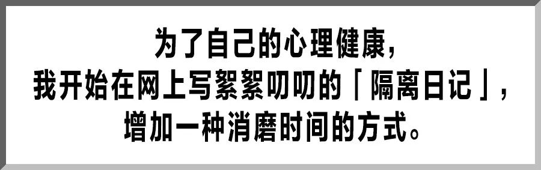

悼念“吹哨人”李文亮医生
原文链接 备份链接 在接受媒体采访时，被问及康复后有什么计划，李文亮说：“恢复以后还是要上一线，疫情还在扩散，不想当逃兵！至于疫情以后的事，还没想太多。” 全文2071字，阅读约需4分钟 2月7日凌晨，武汉中心医院官方微博发布消息：我院 …

这是系列报道的第六篇，金融从业者霍超的隔离日记。从 1 月 30 日到 2 月 7 日，霍超因旅途中曾与「新冠肺炎」确诊患者搭乘同一航班而被隔离观察。这 8 天里，他在无锡郊外的隔离病房体验了「一遭难得的人生经历」（摘自霍超个人公众号）。我们之所以邀请他来讲述自己的故事，理由有二：首先，一个有同理心和纪律感的普通公民在遭遇风险时迅速做出了合乎社会道德的冷静判断，这是一种能力；其次，在疫情引发的信息瀑布中，他审慎地筛选了有利于自己心里疏导的一部分，并在此基础上，做出了思考。而思考，无论在何时，都是一件有意义的事情，尤其在这个被霍超称之为「信息的茧房」的时代。

2020 年 1 月 22 日，我终于结束了一年的忙碌，提前放假，从北京搭乘航班去柬埔寨西哈努克港，想赶在除夕前与在那里工作的母亲团聚，而航班中间经停武汉。飞机原定在 23 号凌晨 2 点起飞，就在等待的过程中，我从手机上看到武汉市政府宣布今天上午 10 点封城的消息：「全市城市公交、地铁、轮渡、长途客运暂停运营；无特殊原因，市民不要离开武汉，机场、火车站离汉通道暂时关闭。」几乎同一时间，这班航班宣布延迟一小时起飞，我的心咯噔一下，有了不好的预感。

一如这次疫情中的大多数人，我对新型冠状病毒肺炎也有着一个从无知无觉到后知后觉的过程。因为我在武汉大学读了四年，毕业后又在武汉工作四年，可以说自己最好青春的时光都留在了武汉，所以也说不清从何时开始，我把武汉当成了第二故乡。今年 1 月初，我偶然了解到武汉地区可能存在类似 SARS 病毒的消息，但并未在意，只是当做日常的诸多信息洪流之一，从未想过它会影响我的生活。直到 1 月 17 号，有尚在日本留学的同学以为我还在武汉工作，特别在微信上询问我关于武汉疫情的情况，从那时起，我开始有意识地搜寻中外各种媒体上和武汉疫情相关的新闻，惊异于两方报道的截然不同，以至于我第一次对于「言论自由」的外媒的「夸张」的报道将信将疑。
但是在乘坐途经武汉的航班上，我还是审慎地佩戴了 N95 口罩，全程也都在遵守从「丁香医生」上看到的勤洗手、必要时进行消毒的医嘱，尽人事，听天命。最终，我的航班在延迟一小时后起飞了，那可能也是从天河机场起飞的最后几班国际航班。
身处异域，我还是会时不时地刷一刷武汉相关的信息。1 月 27 日，柬埔寨卫生部官方公布本国出现第一起确诊病例，并且确诊患者搭乘的就是从武汉到西哈努克港的航班。环球同此凉热，流言四起中，当天在西哈努克港的市场上，华人纷纷抢购，最普通的医用外科口罩从一包 1 美元立马飙升到 10 美元。第二天，在各类真假信息的包裹下，当地的「中国商会」直接联系我，通知我要尽快去西哈努克港当地较好的几家医院做备案登记；而当我到了医院门口，看到当地的医疗条件 —— 这里「较好的医院」可能远比不上国内一线城市社区医院的诊疗环境，同时还缺少核酸检测试剂，只能执行最基本的检查 —— 当然一切无恙。

在那之后，作为一个自身高度怀疑曾接触确诊感染患者可能的人，我尽可能地做好防护，每日佩戴口罩，剩下的几天里都在酒店的房间里度过。我想这不仅仅是对自己，更是对遇到的每个人尽责。然而，是留在当地静观疫情之变，还是如期回到祖国，选择相信祖国的医疗条件和治理水平，这是摆在当地许多华人面前的一道选择题，而我选择了后者，自西哈努克港经停无锡返回北京。
1 月 30 日我刚刚落地无锡，打开手机给爸妈报了一声平安，人们开始涌动，大家起身从行李架收拾东西，然而飞机上的广播突然响起，「乘坐本次航班的旅客霍超先生，因为您先前乘坐的航班发现了新型冠状病毒确诊患者，请您先到登机口进行检查，其他乘客请保持在自己的座位不动……」

就在回国的前一天，我看过一条某返程航班上海人与武汉人争执的故事，所以站在机舱中的我心头一凉，好在虽然有人窃窃私语，但绝大多数乘客看到我前行，主动给我让开一条道。无锡的海关和医护人员立刻引导我到登机口，耐心对我做了体温监测和健康情况的问询。
他们解释说，根据公安提供的大数据，已明确我先前乘坐的航班确诊患者，依照目前疫情的特殊情况和相关规定，我要被扣留在无锡，就地隔离。同时海关人员还要求我详细说明自己从某日起的行踪。
不论你是否愿意接受或者承认，与信息时代伴生的，是个人隐私的丧失 —— 无论中外 —— 只是数据信息最终归属于大型的跨国公司还是政府组织，但这种隐私的丧失已经是难以避免的宿命。所以我很主动地交代了自己所有的行迹，因为我明白，自己在国内一切行踪也都生成了数据，唯一可能的问题无非在于，所有的信息是否都已汇总到一个系统里，而此时此刻，能够保护自己和邂逅的人的最好方式就是去坦白，避免疏漏。

确定要被隔离观察的消息并没有引起我的恐慌，这反而使我安心了很多：与其自己一直无由地猜疑，不如有这样明确的回答。并且如今已身处国内，医疗软硬件着实可以让我比在柬埔寨安心许多，至今我还记得家人嘱咐我，从西哈努克港过关时，务必要在护照里夹上 5 美元的小费，免得柬方海关人员折腾你的行李。
之后的经历，对于我来说，就是很多的第一次了。在海关人员的指引下，第一次走过了空旷的外交礼遇通道；在医护人员的带领下，第一次坐上了医院的救护车；在隔离人员的教导下，办理了隔离入驻的相关手续…..
如果说在这个过程里，是否有怀疑，或者说是否有顾虑，这必然是有的，但自己这么多天浸染在媒体全方位、多角度、立体式的宣传中，也明白这次疫情绝非一朝一夕，更不可掉以轻心。作为一个普通的守法公民，尽可能多一点的配合，尽一份力，相信只要通过阴寒的隧道，就可以看见光亮。
隔离入住的生活条件和我预想的也差距不大：由城市偏远处的工业区单人房改造而成的隔离住宿。可以保证基本的生活，但也仅仅是基本的生活，肯定远没有居家的惬意舒适。但是在疫情肆虐之下，各种资源紧缺，我能理解。
如果没有身处其中，依我浅薄所想，可能这栋隔离楼内发生的众生百态将与如索尔仁尼琴的《癌症楼》大抵相似；但是经过我的观察，微信群中，同楼网友们的状态远比我想象得欢乐，并没有被「过度卷入」恐慌。除了吐槽和咨询一些生活问题外，当然最多的问题还是吃……再有就是彼此之间的沟通、鼓励、打气，和给医护人员们线上加油助威。如今再回想一下，我被隔离的 8 天时间里，也只听到一次急救车的声音。可以想见，我所在的隔离区，大抵也都比较健康，无论是身体还是心理。

也是为了自己的心理健康，我开始在网上写絮絮叨叨的「隔离日记」，增加一种消磨时间的方式。虽然我明白这都是写在水上的字，转瞬就流逝了，但既然有了这个难得的慎独机缘，不如就趁机多一点写作、多一点思考、多一点为了忘却的纪念。
入住隔离区的第五天，疾控中心负责核酸检测的医生，开始给我进行第一次核酸检测。在与医生的沟通下，我终于明白了自己情况的两点官方解释：首先，并非要从入境之日（1 月 30 日）起算隔离 14 天，而是自接触之日（1 月 23 日）起隔离 14 天；其次，我属于是集中隔离观察的「密切接触者」，也是以下四种情况里最轻的一种。
_确诊患者：_集中收治
_疑似患者：_集中隔离
_发热患者：_集中隔离观察
_密切接触者：_集中隔离观察

每天蜗居在隔离房，我都会定时看疫情相关的新闻，常常是笑着看的时候，看着看着就哭了；哭着看的时候，看着看着就笑了……所以会给自己一个时限，控制自己一天只花一个小时去浏览疫情的信息。然而，在每天登陆各视频网站的过程中，让我「细思极恐」的是，越来越精确的大数据算法 —— 推送的内容显得那么贴心、那么合理，完全不会让你因噎废食，而是一股脑地继续下去，以至于让我感觉虽然看似有了 Wi-Fi，有了互联网，连接着外边的世界，但兜兜转转其实还是被困在一个信息的茧房，被网络的另一端不断投食着自己想要的信息。
如果说面对「新冠病毒」，我们还可以带上口罩、躲进房间里，而面对互联网，点击带来的即刻满足，不仅难已拒绝，并且这种满足仍在无限延伸，从线上到线下，从商品到服务……
在我接受了第二次核酸检测，即将达到接触之日 14 天的时候，我在朋友圈看到的最多的一句话，是武汉作家方方的「时代的一粒灰，落在个人头上，就是一座山。我们唯一的事，就是把这一切都扛下来」。

1998 年，国企改制下岗潮，父母几十年的工龄都换成了毛线，6 岁的我几乎没有任何残存的印象；2003 年，SARS 就在如今距离我家仅两小时高铁路程外的首都肆虐，11 岁的我开心于停课带来的假期；2008 年，汶川地震的那一瞬间，即将中考的我隐约感觉到大地的晃动，不过老师淡定地继续着授课……然而现如今，对于每一个遭遇不同程度疫情的中国人来说 —— 我想引用《T》中文版这次系列报道开篇的一句话 —— 「虽然和新冠病毒保持着安全距离，却也无可避免地卷入其间，牵一发而动全身地体验着它的恐怖」。
自己或许第一次真切地感受到了「时代」这两字的重量。
前天，在我被观察隔离 8 天后，我一边收拾行李，一边问前来通知我的医护人员，现在还能打上车么。她的回答是，因为最近一直在这里工作，对外面的情况也不是很清楚。当我准备离开隔离区，给在一楼门口穿着厚重防护服的医护小姐拍下一张比 V 的照片时，她赶忙给我手上喷了消毒液，并叮嘱我还是早一点离开隔离区，这里很危险，外边更安全。她立刻又赶去工作了。我恍然发现，在我被隔离独居的背后，实际上有那么多人在默默地祝福你，默默地守护你，并且他们还在继续，还在坚持。

1919 年，鲁迅在《新青年》上发表了一篇文章，后来被收入了杂文集《热风》。他如此写道：「愿中国青年都能摆脱冷气，只是向上走，不必听自暴自弃者流的话。能做事的做事，能发声的发声。有一分热，发一分光，就像萤火一般，也可以在黑暗里发一点光，不必等候炬火。此后如竟没有炬火，我便是唯一的光。」
尽一份热、发一分光，少一点黑暗。我相信希望就在不远处。
策划：《T》中文版编辑部
撰文：霍超
开篇撰文：李森 设计：子慜 编排：Lu Wang


文章已于修改
原文链接 备份链接 在接受媒体采访时，被问及康复后有什么计划，李文亮说：“恢复以后还是要上一线，疫情还在扩散，不想当逃兵！至于疫情以后的事，还没想太多。” 全文2071字，阅读约需4分钟 2月7日凌晨，武汉中心医院官方微博发布消息：我院 …
原文链接 备份链接 播放音乐 | 阅读效果更佳 感谢 | 您对霍超LEGAL的关注、阅读与分享 昨天飞机刚刚落地，手机开机给爸妈报了平安，人们开始涌动，起来从行李架上收拾东西，飞机上的广播突然响起，”乘坐本次航班的旅客 霍超先生，因为您先 …
原文链接 备份链接 【财新网】（记者 周泰来 黄姝伦 实习记者 黄晏浩）从2月5日开始，湖北孝感市新冠肺炎累计确诊病例数超过黄冈，成为在武汉之后全国第二大疫区。截至2月8日24时，孝感市累计确诊2436例，高于黄冈市的2141例。据新华 …
原文链接 备份链接 大家好，我是田静。 最近朋友给我推荐了一部韩国电影，叫《流感》，是一部灾难片。 流感的起因并不罕见，讲的是一群东南亚偷渡者历经艰险来到韩国务工，却因沾染猪流感在集装箱内感染而死，只留下一个幸存者顺势逃跑。 随后，流感病 …
原文链接 备份链接 按照西安市要求，明天正式复工，公司陆续发了文件，统计能如期到岗的员工，集中办理小区出入的说明文件（西安部分小区已经封门，进出需要提供盖章材料，更严格者贴通知“上班外出后也不能再进小区，自己和单位协商找地方住”）。 我情 …